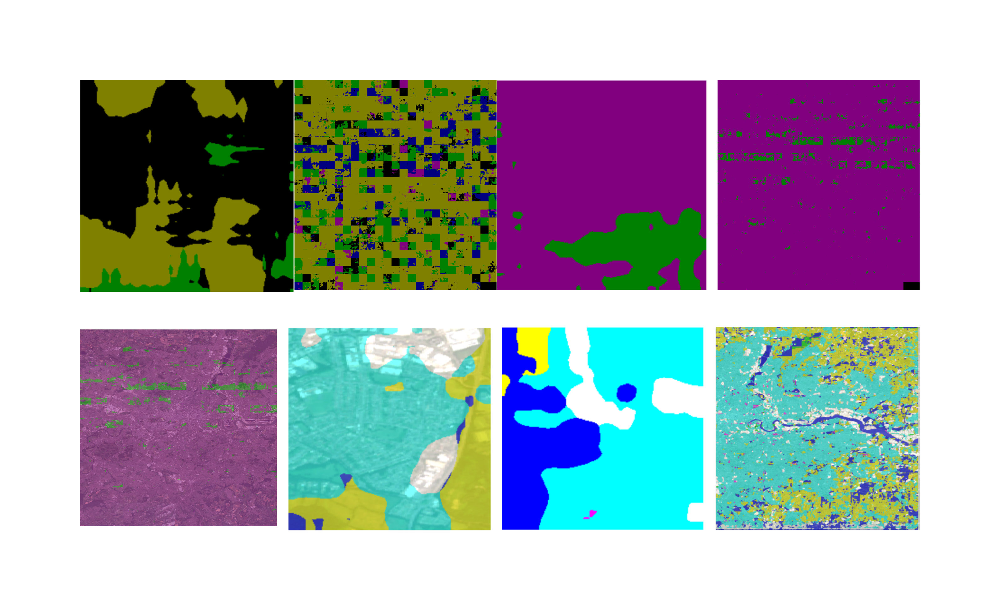
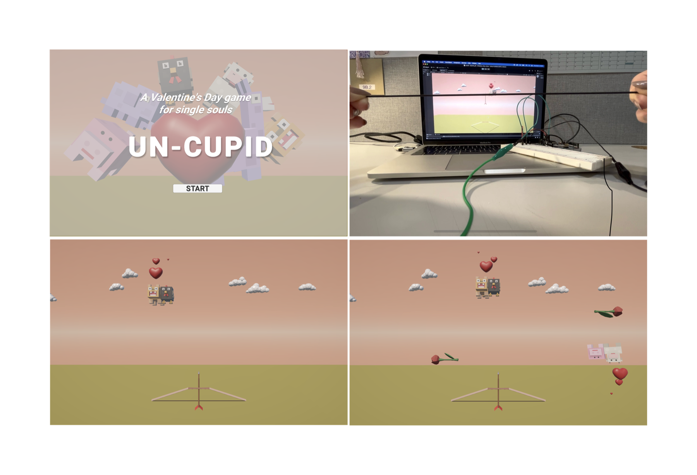
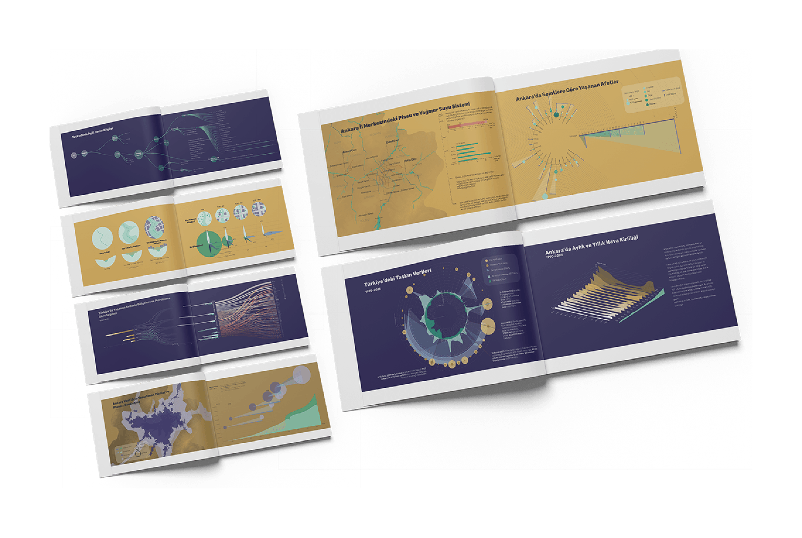
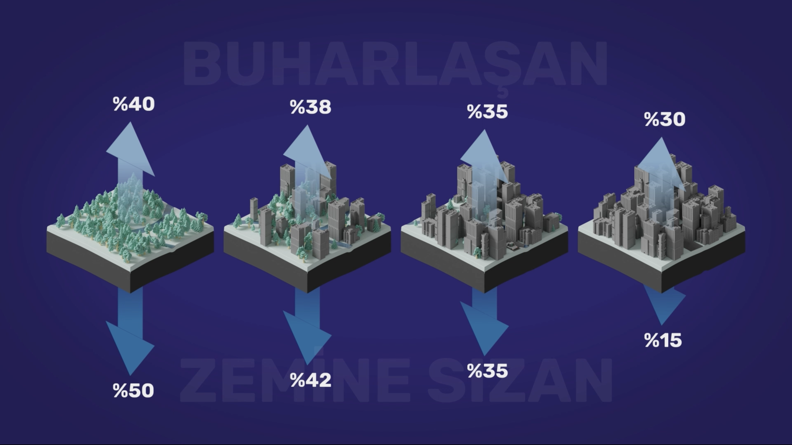

Works
Key Skills
Software & Programming Languages

Coral Stories
Projection mapping submission for OFFF Barcelona 2026 open call

Kin'o'polis
Speculative cartographic tool reimagining London as a multispecies city

Emergence
Interactive 3D projection mapping installation

Pytko June '25 Gig
Live audioreactive visuals for Julia Pytko's Greyhound performance

Pytko September '25 Gig
Live audioreactive visuals for Julia Pytko's Greyhound performance

Umwelt
A project exploring the perception of world through other species.

London Map
London through the eyes of AI — generative cartography

The Lead Arrow
Interactive target shooting game with an arrow controller

Artemis
Pixel art game concept design inspired by Andy Weir's novel

Hidden Streams of Ankara I
Data visualization exploring Ankara's buried rivers and urban flooding

Hidden Streams of Ankara II
3D infographic video on urbanization, lost rivers, and flash floods
About
Creative technologist and visual designer at the intersection of architecture, computational art, and digital cartography. I specialize in building immersive, data‑driven spatial experiences — from participatory mapping tools for urban design to audioreactive live visuals and interactive installations.
With a multidisciplinary foundation spanning architecture, graphic design, and creative computing, I translate complex environmental and spatial concepts into responsive digital environments using 3D design, creative coding, and AI‑driven workflows.